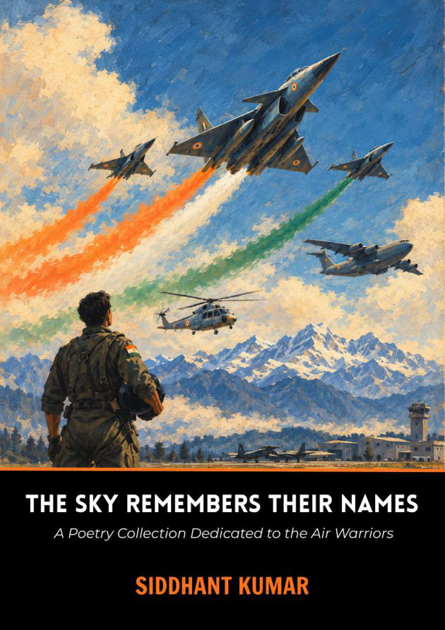

Courage, with conscience.
The collection asks what it means to guard a nation while remaining faithful to truth, compassion and restraint.
A Collection of Poetry Dedicated to the Air Warriors of India
Ninety-four poems for those who fly, those who keep them flying, and those who wait for them to come home.

An aircraft crosses the sky. Behind it is a company of people we rarely see.
The Sky Remembers Their Names brings that company into view. Siddhant Kumar’s collection moves from the Indian Air Force’s beginnings at Drigh Road in 1933 through Independence, the wars of 1965 and 1971, Kargil, Siachen, humanitarian rescues and Operation Sindoor, toward the eve of its centenary.
Its subjects include pilots and technicians, controllers and commandos, instructors and medical teams, the aircraft that served and the families who wait. Each poem joins a historical subject to a reflection on service, courage, restraint, truth or love of the motherland.
Short notes accompany the poems to explain their subjects. The collection also includes a glossary, named tributes and an author’s note, offering a way into the history as well as the verse.
“Every aircraft that crosses the Indian sky carries more than its crew.”From the preface
The author’s starting question is simple: who keeps the sky? The poems look beyond the visible moment of flight to the responsibility, precision and love that make it possible.
The collection asks what it means to guard a nation while remaining faithful to truth, compassion and restraint.
A signed maintenance form, a watchful controller, a medic on duty: careful work becomes an act of trust when another life depends on it.
Families, teachers, veterans and wingmen belong to this story too. Remembrance reaches beyond a name on a medal.
The collection moves between named portraits and the many lives that make a flying service possible. These are a few of the people and perspectives you will meet.
“Where Duty Took Wing” begins with the airman whose final combat over Srinagar anchors the collection’s opening portrait. The poem asks what it means to turn toward danger in service of those below.
Poem 1 · Where Duty Took Wing
“Five Stars Were Never High Enough” reflects on leadership, readiness and the quiet authority of a commander. Honour is measured through service to others as well as rank.
Poem 2 · Five Stars Were Never High Enough
The hangar, the checklist and the release-to-service signature become moral acts. Precision matters because a life will depend on what another person noticed before dawn.
Poems 14 and 24 · The Hands Beneath the Wings / A Signature Before Dawn
“The Sky Had Room for Daughters” places the opening of the fighter stream in the longer story of women’s flying service, with competence, training and standards at its centre.
Poem 16 · The Sky Had Room for Daughters
The story of air power includes those who protect airbases, recover aircrew and meet danger beyond the cockpit. Their service broadens the meaning of a pair of wings.
Poem 19 · The Garuds Keep Watch
Postings, delayed calls, shared trust and the work of returning home give the book its quieter register. Waiting and belonging become part of service, even when no parade names them.
Part Five · Beneath the Same Sky
Selected threads from the collection’s historical journey. The poems move between these moments and the questions of service, restraint and human cost that surround them.
Four Wapiti biplanes at Drigh Road begin a story that will outgrow their small first formation.
The poems move through a new nation’s responsibilities, the Dakotas to Srinagar and the difficult work of reaching high-altitude frontiers.
Leadership, Longewala, the air road to Dhaka and cooperation across the services place the reader inside decisive chapters of history.
Glacier flying and Operation Safed Sagar ask what duty looks like when terrain, weather and altitude make every margin smaller.
The tsunami and Himalayan disasters bring transport crews, helicopters and medical help into a different kind of urgent service.
Operation Sindoor, indigenous capability and the approach to the centenary bring remembrance into a continuing story.
A fighter, a transport, a helicopter, a watchful eye above the clouds. Each serves a different need.
Part Four turns to the aircraft and systems themselves: the Gnat and Mirage, the Sukhoi and Rafale, indigenous Tejas, transport aircraft such as the C-17, helicopters including Dhruv, and the surveillance and air-defence systems that connect the picture.
These are poems about capability and the responsibility behind it. Transport becomes the strength to carry help. A sensor becomes the duty to see clearly. A machine’s power matters because of what it protects, who prepares it and the judgment of those who use it.
“History tells us what happened; poetry asks what it meant.”Siddhant Kumar · The Sky Remembers Their Names
Explore all 94 poems, from portraits and operations to the people, history, machines and relationships that sustain the Air Force.
From Nirmal Jit Singh Sekhon and Arjan Singh to Longewala, Kargil and the Garuds: people and moments that give courage a name.
Technicians, engineers, controllers, instructors, medics and administrators: the skill, trust and careful work behind every sortie.
Four Wapiti biplanes at Drigh Road begin a journey through war, independence, airlifts, rescue and humanitarian service.
From transport aircraft and helicopters to Tejas, Rafale, Netra and air defence: machines considered through the responsibility they carry.
Cadets, veterans, wingmen and families bring the collection home to belonging, conscience, leadership and remembrance.
Selected passages from the supplied manuscript.
Before the fighter meets the dawn, before the runway sings, There are hands beneath the fuselage preparing India’s wings. They read the smallest warning, hear the faintest change in tone, And make the aircraft worthy of the trust it carries on.
Do not show me only thunder crossing mountains into dawn; Show me the lamp still burning when the flying crew has gone. Show me the engineer who finds the fault beneath the skin, The weather officer reading where tomorrow’s winds begin.
Brief excerpts reproduced from the author’s manuscript. © 2026 Siddhant Kumar.
For the Air Warriors of India –
those who fly,
those who keep them flying,
and those who wait for them to come home.
And for every name the sky remembers.
For poetry readers, aviation enthusiasts, service families, veterans, students and anyone who has looked up at an aircraft and wondered about the people behind its flight.
Read a poem at a time, follow the history across five parts, or begin with the people and places that mean something to you.
An author, developer and researcher from New Delhi, India.
Siddhant’s writing returns to service, courage, responsibility and the lives behind the events we remember. His first book, Guardians in the Gale, is a collection of poetry honouring the Indian Armed Forces.
This collection turns his attention to the Air Warriors of India, joining a tribute to their service with reflection on what it means to remember.
It is a collection of 94 poems dedicated to the men and women of the Indian Air Force. Historical portraits, operations, aircraft and everyday service become starting points for reflection.
Guardians in the Gale honours the Indian Armed Forces more broadly in 21 poems. This collection focuses on the Indian Air Force across 94 poems in five parts.
The poems include short explanatory notes, and the collection has a glossary. Readers can approach it through the stories, the history or the poetry.
No. The manuscript identifies it as an independent poetic tribute based on publicly available sources. The views and any errors are the author’s own.
Purchase links and release details have not been added to this page. For availability, readings or school and organisational enquiries, write to sid@siddhantkumar.in.
For book availability, readings, school visits or a thought you would like to share.
sid@siddhantkumar.in